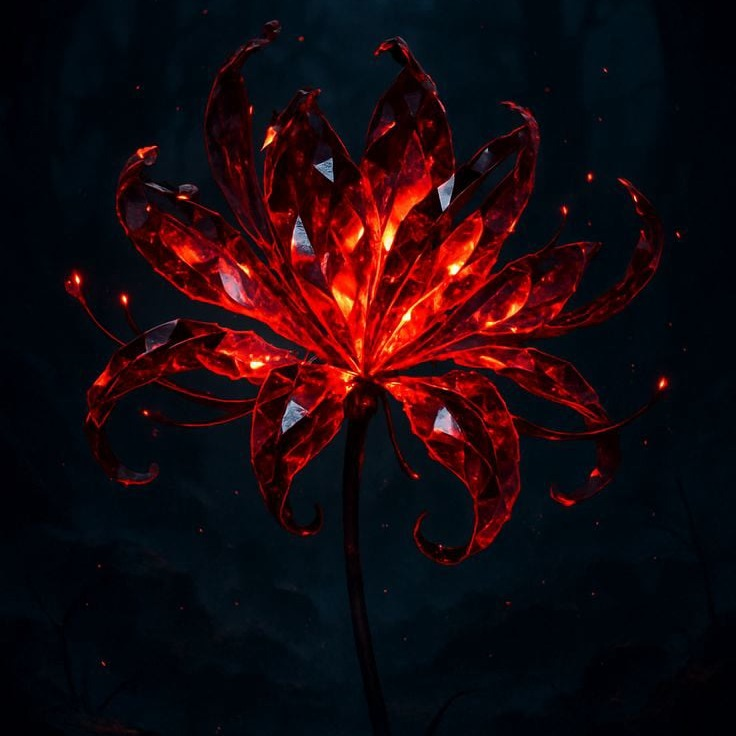

Offline Website Builder
As primeiras semanas foram daquelas que a gente não conta para ninguém com medo de estragar. Era um “oi mental” que virava conversa até a madrugada, caminhadas na praça que sempre rendiam uma despedida demorada, e um silêncio confortável que cabia entre um assunto e outro. A gente ria de coisas bobas, e eu comecei a perceber que meu dia só ficava completo depois de ouvir sua voz em algum áudio aleatório. Existia uma rotina silenciosa que me fazia sentir parte de algo — e, por um tempo, eu achei que aquilo bastava.
Foi no dia 24 de fevereiro que a linha que eu tinha mantido como limite foi cruzada.
Não planejei.
A gente tinha passado final da tarde juntos, algo que já estava virando costume, e no momento da despedida alguma coisa naquela noite fez com que eu me inclinasse e te beijasse.
Talvez a chuva naquele fim de tarde...Talvez o clima agradável que havia se formado.
Foi um beijo que começou tímido e terminou como se a gente estivesse se testando. Depois dele, o ar mudou. A gente não falou sobre na hora, mas os dias seguintes carregaram um peso novo, uma expectativa que não estava ali antes.
No dia seguinte, tentei repetir.
Você recuou.
E ali, naquele recuo, eu tomei uma decisão silenciosa:
não ia mais insistir.
Desisti romanticamente antes de qualquer conversa, antes de perguntar o que aquilo tinha significado pra você.
Erro meu.
Eu projetei no seu silêncio uma resposta que talvez não fosse verdade.
Dia 1º de março eu fui te ajudar com o guarda-roupa. Você tinha bebido um pouco, mas não era só o álcool. Desde que eu cheguei, você estava diferente — mais perto, mais solta, me mordendo como quem brinca, mas com um tom que não era só brincadeira. Mas quando você se aproximou e me beijou, o gelo escorreu, e por alguns segundos eu senti que a brincadeira tinha virado outra coisa.
Em algum momento, você pegou gelo, colocou na boca e me perguntou como era o beijo de uma morta. Era uma brincadeira sua, típica. O Gabriel foi embora e a casa ficou só nossa.
Depois veio a música.
K.
CigarettesAfterSex.
A gente dançou abraçado, devagar, no meio da sala. Você não estava apenas brincando. E eu, naquele abraço, me deixei acreditar que você queria tanto quanto eu. Foi um dos momentos mais bonitos e mais confusos de toda a nossa história. Porque no dia seguinte, a mágica tinha sumido, e eu não sabia mais o que daquilo era pra valer e o que era só o momento.
Dias depois, no dia 4 de março, você me pegou de surpresa na despedida. Foi rápido, como quem faz por impulso, mas com um sorriso depois que entregava que tinha sido planejado. Eu perguntei no dia seguinte, por mensagem:
“Por que me beijou?”.
Você disse que não foi só retribuição. E quando eu esperava um desfecho, veio a palavra que viraria um nó:
“Segredo”.
Foi aí que eu percebi que a chave daquela história não estava comigo.
Você guardava o significado dos seus gestos, e eu só podia esperar que um dia você quisesse me contar. Esse segredo virou um fantasma que pairava sobre a gente.
Eu não sabia mais o que os seus toques queriam dizer.
Houve também um momento, no dia 7 de março, que me marcou de outra forma. Você me mostrou uma foto de uma maquiagem que tinha feito, mas sem algo no busto pra cima. Não era uma foto sensual no sentido comum — era um registro de um trabalho artístico que você estava orgulhosa, e você me escolheu pra ver, ou foi o que pensei.
[08/03, 1:52 PM] : E eu queria matar o gato.
Eu lembro de ter desviado o olhar por um segundo, não por timidez, mas porque naquele clique eu vi que você confiava em mim de um jeito que não confiava em quase ninguém.
Foi um presente. - pensei...
Um sinal de que eu era uma das poucas pessoas que você deixava ver suas camadas mais íntimas. E ao mesmo tempo, um lembrete de que, por mais que você se abrisse em certos momentos, as camadas emocionais continuavam fechadas com um cadeado que só você tinha a chave.
Tinha uma semana no mês em que você ficava mais perto. Não só fisicamente, mas emocionalmente. Seu humor oscilava entre a irritação e uma doçura que eu raramente via em outros momentos. Você me procurava mais, se deixava abraçar, ria das minhas piadas idiotas como se fossem a melhor coisa do mundo. Era nesses dias que eu sentia que você baixava a guarda, que permitia ser cuidada sem brigar com o cuidado. Era bonito, mas era também um padrão: eu me acostumei a receber sua vulnerabilidade só quando seu corpo te forçava a isso. No resto do tempo, você mantinha distância, e eu fui aprendendo a esperar pelo próximo ciclo. Hoje entendo que aquilo me colocou numa posição de quem aguarda migalhas, e que isso desgastou a minha própria capacidade de ser só amigo.
A gente nunca conversou sobre o que aqueles beijos significavam. Eu desisti de perguntar depois do “segredo”. Você nunca perguntou por que eu tinha mudado. Ficamos um tempo nesse limbo:
eu tentando ser amigo...
você ainda agindo como se eu quisesse algo...
e eu...
sem coragem de dizer que já tinha desistido...
porque confessar aquilo parecia confirmar que eu não me importava ( o que não seria verdade).
Eu cuidava de um jeito que você sentia como controle. Você recuava e eu insistia, não porque não respeitasse seu “não”, mas porque não sabia ler nos seus gestos a diferença entre
“me ajuda”
E
“me deixa em paz”.
E você, nos dias em que queria colo, me procurava com uma intensidade que confundia tudo de novo. A gente criou uma dança onde o passo era sempre o mesmo: aproximação, intimidade, medo, recuo. E ninguém soube dar o próximo.
Quando você finalmente falou, no dia 18 de março, foi direto:
“Pode parar de me tratar como se eu fosse uma criança?”.
Eu pedi desculpas, recuei. E depois, quando tentei me reaproximar como amigo, você me respondeu:
“Você não quer manter a amizade comigo. Você quer ficar comigo.”
Naquele momento, eu não corrigi. Mas a verdade é que eu já havia desistido romanticamente antes disso. Só não te contei.
Erro meu.
Na última troca, eu disse que ia respeitar seu espaço. Você não respondeu mais. E o silêncio que veio depois foi o mais honesto que a gente teve — porque finalmente eu estava escutando o seu “não” sem tentar interpretar outro significado.
Sem ter que me justificar.
Guardo com carinho os primeiros dias, as caminhadas na praça, os áudios longos, o riso solto, o cheiro do seu cabelo quando eu te abraçava. Guardo também a lembrança de você confiando em mim num dia de chuva, ou quando mostrou seu rosto sem maquiagem, ou quando riu de algo que eu disse como se eu fosse a única pessoa no mundo.
Aprendi que amor não se prova com insistência. Aprendi que cuidado vira sufoco quando não é pedido. Aprendi que não basta desistir internamente; é preciso dizer, para que o outro não passe o resto do tempo tentando ler nos meus gestos o que já não existe.
Você me ensinou a respeitar o “não” antes de entender o “sim”. E eu espero ter te ensinado que, mesmo quando errei, nunca foi por falta de querer acertar.
Se um dia houver espaço pra uma amizade sem jogos, eu estou aqui.
Mas sem pressa, sem segredo, sem achar que preciso provar nada.
Do jeito que sempre deveria ter sido.
Até lá, fico com o que a gente viveu e com o que ficou.
Flor que representa despedida, memória, reencontro em outra vida e, por vezes, o último adeus.

Offline Website Builder